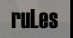

   |
|||||||
|
|||||||
| R U L E S ! ! ! | ||||||||||||||||||||||||||||
|
Registration to DuelMania
You will be given a username and password, this is for reporting matches and is unique for each player, so don’t lose it and don’t give it away. Any false or lame registrations will be deleted. If we get more than 64 registered players then some will not be able to compete, at least in DuelMania 2. We will expand the 64-player limit in DuelMania 3, if it is needed.
Unfortunately, we can only accept signups from; Norway, Sweden, Denmark and Finland, due to the ping/pl issue. DuelMania will be played on servers in those countries. If players from other countries wish to participate, they can do so, but they have to play on a server as specified above.
Tournament system
All 64 players are put into groups of 4 players each, which make a total of 16 groups. Everybody plays everybody in their group, so all players get a minimum of 4 matches (3 group matches + minimum one playoff game).
#1 and #2 from each group advances to playoff A, #3 and #4 to playoff B. DuelMania is not only for the best players, it is for everybody who likes to duel, that’s why we have a playoff B as well, to keep the community active, not only for the winnings, but also for the fun.
Game settings
Timelimit is 10 minutes per map. Overtime should be set to 5minutes.Maps will be played using the following settings: DMM3, no powerups, discharges on, no fairpacks, normal qw spawns, no berzerk-midair-instagib or other unusual modes. Allowed maps are DM2, DM4 and DM6. Both players will choose a map. Both players must tell their maps before the match starts. Winning the match requires winning of two maps. In 1-1 situation the third map will be determined by this formula: if one map has been played twice, it will be the final map as well. If there has been played two different maps, the final map will be the map that is still remaining (dm2-dm4-dm6). In case you cant agree what server you'll be playing on, please contact admins (and go like this: “we are kids, can some admin plz help us?”)
Client settings
The only allowed proxy is Qizmo 2.91 and both QWCL and MQWCL's newest version clients are allowed: no Cheapos nor any other weird programs will be tolerated. F_modified must report "nothing" and F_speed must be 100% or less. For some players the speedcheck bugs, so if the speedcheck reports 100,05 % or less, then that is acceptable as well. You may use FB-skins.
Seeding
All 64 players are seeded in 7 seeding levels. In front of every tournament, we do a live draw at IRC (quakenet) in the channel #duelmania, setting up the 16 groups for the forthcoming tournament. All 64 players get drawn randomly out of the 7 seeding levels, into the 16 groups. The 7 seeding levels are as follows:
If you look at the 16 groups, you will see where all the seeds are put, for example: sl4 = seeding level 4. So as you can see, in all groups there are players from seeding level 4 and 7, the only two seeding levels that have 16 players in it. Players from same seeding level will not face each other in group matches. Players from seeding level 1, 2 and 3 will not face each other in group matches. So a group will look like this:
1 player from seeding level 1, 2 or 3 The seeding will ensure that the players, who perform best, will not meet before it’s inevitable, i.e. late in the playoffs. So if the top seeds do as expected, they will not meet before its inevitable, just check the playoff set-up.
Group games
Point system in group games goes like this: 2-0 victory gives you 3 points, 2-1 victory 2 points and a 1-2 loss gives you 1 point. In a case when there's players tied on points, positions will be decided by the game between them. If it's still impossible to decide it that way (if 3 or 4 players have all beaten each other) then the mapscore (+/-) settles it. If players are still tied on mapscore, their final situation will be clarified by rematches.
Look at playoff set-up to see where your road to glory might lead. The whole league procedure can be found in the results section.
Playoff
Playoff A - is for the #1 and #2 players from each group, i.e. the top 32 players. Playoff B - is for the #3 and #4 players from each group, i.e. the bottom 32 players. Both playoffs are the same system: a 32-player single knockout tournament. The playoff system makes sure that players from same group will not meet again unless they both go to the final. The best seeded player’s will either not meet until it is inevitable, if they do as expected and don’t lose their seed-spot to another player that beat them. 16 best seeds don’t meet until 1/8th finals, 8 best seeds don’t meet until quarterfinals, 4 best seeds don’t meet until semi-finals. Both playoffs make sure that we can rank all players from 1-64, making the next tournament ready to go.
The whole league procedure can be found in the results section.
Reporting matches
The winner reports the match ASAP on the web. Go to the “report match” link in the results section and upload screenshots, insert winner/loser, frags and average ping. If the average ping shows wrong on the screenshot, then just write down what the ping really was. Screenshots must be in .jpg format 320x200-240 pixels. If you don’t know how to do this, then here is a little help; first you need to convert the screens to .jpg, regardless of pixel size. If you get an option to choose quality when converting (for example photoshop), then choose medium(lowest medium) or low quality. If you use ACDSEE (or any similar program) then just convert it to .jpg, and that’s it. If the screen is the right pixel size after converting to .jpg, then it is ready for upload/report. If it is not (because you for instance are playing in GL), and you don’t know how to make it 320x200-240, then here is some more help; do NOT resize the screen to 320x200-240, you must CROP the screen. If you for instance resize a 1024x768 screen to 320x200-240 without cropping it, then the text on the screen will be unreadable; this is WHY you need to crop it. If you don’t know how do this, then you can do it in a program that everybody has; MSPAINT. Open the .jpg screen in MSPAINT and use the SELECT tool (the tool that’s one the top right). Now you can make a square that’s 320x200-240 with the select tool. When you move your mice, you can see the PIXEL SIZE at the bottom right of your screen. Then all you have to do is to adjust the square, making the score, nicks, ping etc in the centre of this new square you are making. When you have made the square as you want it (320x200-240 pixel size), then release mouse button, press [ctrl]+[c], then go to FILE and make NEW. Then press [ctrl]+[v], voila, your screenshot is ready; save, rename and upload/report it.If you still need help to convert your screenshot, then just ask an admin (or anyone who is willing to help) in #Duelmania, and we will do it for you. Remember: jpg. 320x200-240 is the ONLY format acceptable! No match will be registered before the match has been reported 100% correct…no exceptions.
Timeframe
All matches will have a deadline. If players cant organize themselves to get games played and reported by the end of the deadline, then WO will be given to the player that notified the admins that he really tried to make the game happen. If no player pays any interest at all to get the game played, both players loses, meaning no points in groups or both out of playoffs. In case of a WO (walkover) in group games, WO will be set to a default 2-0 victory. If WO’s has any influence on groupstandings, then default WO will be given to the players involved, regardless of previous results. Deadlines for each stage of the tournament will be announced at the update section and will be advertised in #duelmania topic at quaknet (irc)
DuelMania admins
DuelMania admins are here to help, so if you ever need our assistance or have a question, then you can find us on the IRC server quakenet, in the channel #duelmania. All that got a “@” in front of their nicks should be an admin.
Other important stuff
No droppings. No unnecessary whining (then again, what kind of whining is necessary?) Lame people will be treated lame, nice people will be treated nice. Any kind of idling or lameness will not be tolerated. Players who cheat, or try to cheat will be permbanned from DuelMania. Players are allowed to have fun while killing their opponents.
|